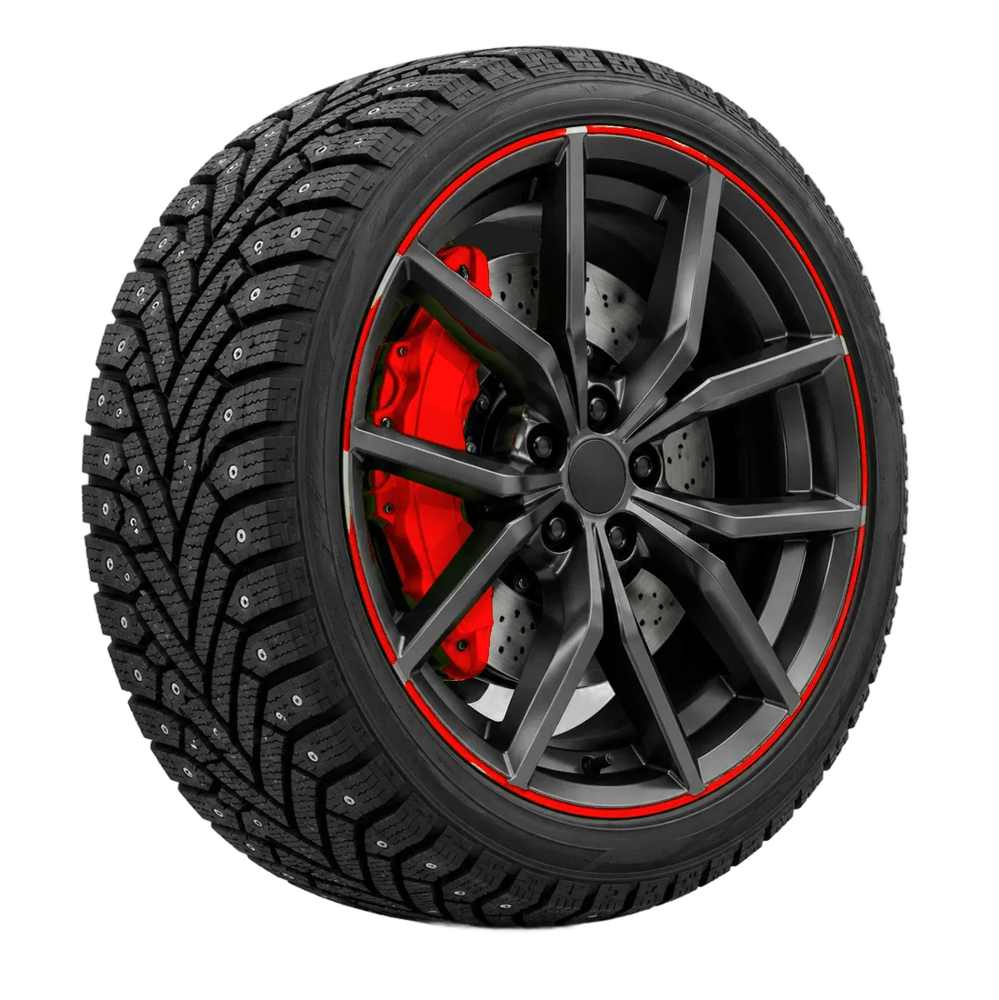
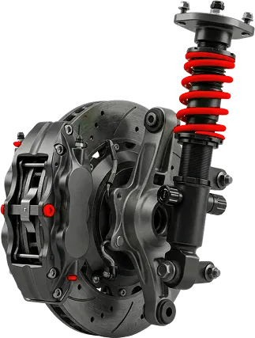
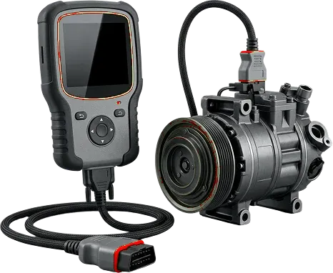

Двигатель
Ремонт двигателяРемонт дизельных двигателейЗамена маслаРемонт выхлопной системы
Узнать цену
Минск, Долгиновский тракт, 45
СТО-777 в Минске: ремонт двигателей и дизелей, коробок передач, ходовой, электрики, покраска и шиномонтаж.

Отечественные и импортные автомобили
Ремонт дизелей и бензиновых моторов
Условия подскажем по телефону




Ремонтируем здесь свою машину и приезжаем ради этого из Санкт-Петербурга. Ребята не ушли домой, пока не доделали. Спасибо за ответственный подход и человеческое отношение.
Отличные мастера: быстро и качественно, что сказали — то и сделали. Диагностируют честно, без прикрас. Лучше записываться заранее.
Мастера своего дела, делают быстро и качественно. Обслуживаю машину только здесь — качество на высоте, а цена не кусается.
Отдельно отмечу развал-схождение — мастер просто супер, человек на своём месте. Кто заедет хоть раз, больше никуда не поедет.
Если надо переобуться — сюда. Скрупулёзно проверят колёса, найдут любые проблемы и предложат недорогой вариант ремонта.
Лучший шиномонтаж в Минске, а шиномонтажник Андрей — человек с большой буквы.
Расскажите, что с машиной
Работаем по предварительной записи
Долгиновский тракт, 45